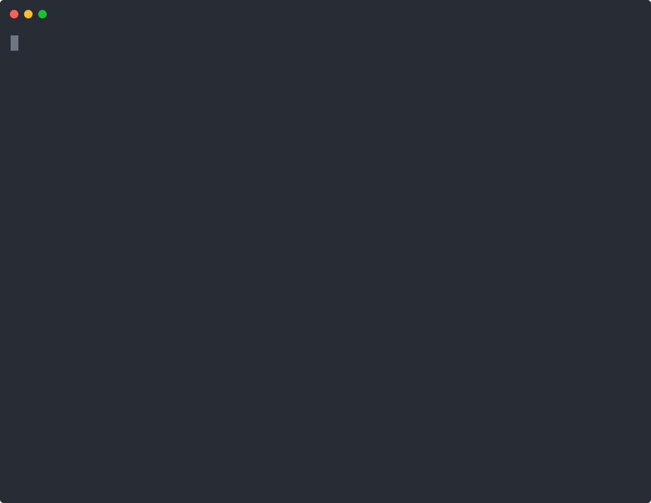
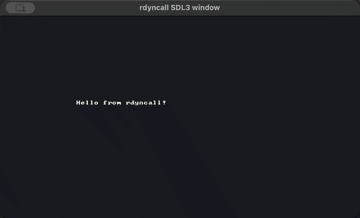
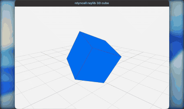

rdyncall provides an R interface to the DynCall libraries. It is a low-level Foreign Function Interface (FFI) for loading shared C libraries, resolving symbols, calling C functions from R by signature, working with C struct and union data, and exposing R functions as C callback pointers.
The package is intended for developers who already know the C API they want to call and need an exploratory or dynamic binding layer from R without writing a compiled wrapper for every function.
Showcase
rdyncall can call into native libraries directly from R: generate an SDL3 binding package from DynPort metadata, open a real SDL3 window, or bind raylib drawing calls and drive a rotating 3D scene.
| SDL3 generated binding package | raylib 3D rendering from R |
|---|---|
|
 |

|
|
 |
 |
Installation
remotes::install_github("hongyuanjia/rdyncall")rdyncall was previously archived on CRAN. This repository contains the active modernization work toward a maintainable package and current R toolchains.
Quick Start
Generated DynPort packages can be called through ordinary package namespaces:
dynport(SDL3, package = "SDL3")
SDL3::SDL_GetPlatform()You can also call a C function directly by loading a library, resolving a symbol, and providing a call signature:
library(rdyncall)
mathlib <- dynfind(c("msvcrt", "m", "m.so.6"))
sqrt_addr <- dynsym(mathlib, "sqrt")
dyncall(sqrt_addr, "d)d", 144)The signature "d)d" means one C double argument and a C double return value. Signatures must match the target C function type.
R functions can also be wrapped as C callback pointers:
Foreign aggregate layouts are described once and then used through raw-backed objects:
Learn rdyncall
The pkgdown articles are the main documentation path:
- Start with Getting started and Signatures for C calls.
- Continue with Structs, unions, and memory and Callbacks from C to R.
- Build larger bindings with dynbind and DynPort bindings, Creating DynPort files, and SDL3 non-GUI probing.
- Use Troubleshooting and FFI safety boundaries before binding ownership-sensitive, callback-heavy, or platform-specific APIs.
API Map
-
dynload(),dynunload(),dynsym(),dynpath(),dyncount()anddynlist()load shared libraries and inspect symbols. -
dynfind()resolves common short library names across platforms and package manager locations. -
dyncall()anddyncall_variadic()call C functions using compact type signatures. -
dynbind()creates thin R wrappers for a group of C functions. -
cstruct(),cunion(),cdata()andas.ctype()describe and access C aggregate data. -
pack()andunpack()read and write low-level C values in raw vectors or memory referenced by external pointers. -
ccallback()turns an R function into a C function pointer. -
dynport()builds and loads generated R packages from DCF.dynportbinding specifications.
Structs, Unions and Memory
rdyncall can model ordinary C struct and union layouts and supports several layout features needed by real C APIs:
- fixed-size array fields, written as
type[N], such asC[4]; - integer bitfields, written in the field-name list, such as
flags:3; - packed and aligned layouts via
@packed,@pack(n)and@align(n); - nested aggregate fields and by-value aggregate calls on supported DynCall backends.
For callbacks, ccallback() supports aggregate by-value arguments and returns on the implemented x86_64 and ARM64 dyncallback backends.
DynPort Bindings
dynport() is the package-level mechanism for binding a C API from a data file. The current implementation supports DCF .dynport files and generates ordinary on-disk R packages whose namespace is populated from the DynPort metadata.
The package ships one maintained DynPort example, inst/dynports/SDL3.dynport, generated from SDL3 headers with porter. See the generated-binding articles for how to create DynPort metadata for a C library, load it with dynport(), and run a non-GUI SDL3 smoke test.
Demos

Run demo(package = "rdyncall") to list installed demos. The package includes small examples for direct FFI calls, callbacks, qsort, stdio, GLPK, libxml2, SDL3 and raylib.
Some demos require system shared libraries or open GUI windows. Automated checks should prefer non-GUI examples or explicit probe modes rather than entering an event loop.
See the Non-GUI demos article for XML parsing, C sorting, GLPK optimization, and stdio examples. The GUI demos article shows SDL3 and raylib examples with media placeholders for locally captured screenshots or videos.
Safety
This is a low-level FFI. A wrong function address, call signature, calling convention, pointer lifetime or struct layout can crash the R process. Keep the C declaration beside the R signature when writing bindings, and hold an R reference to callback objects for as long as foreign code may call them. Read the FFI safety boundaries article before binding APIs that allocate memory, store pointers, register callbacks, or run event loops.
Project Status
This repository is the active maintenance branch for modern R. Recent work has restored compilation on current toolchains, refreshed the bundled DynCall source, modernized CI, added variadic calls, improved dynamic library discovery, and expanded aggregate layout support.
References
- Adler, D. (2012). “Foreign Library Interface”. The R Journal, 4(1), 30-40. https://journal.r-project.org/articles/RJ-2012-004/
- DynCall Project: https://dyncall.org